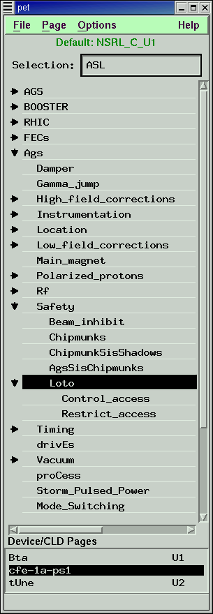

This document provides a description of the control application, which is used to view and edit Accelerator Device Objects (ADOs), Simple Logical Devices (SLDs), Complex Logical Devices (CLDs), MetaDevices and Parameters in the C-AD Controls System. This document focuses on SLD, CLD, MetaDevices and Parameters pages. To learn more about ADO style pages visit the link ADO documentation page.
| Date | Author | ||
|---|---|---|---|
| Program Created | 5/29/03 | Seth Nemesure | seth@bnl.gov |
| Last Modified | 5/29/03 | Seth Nemesure | seth@bnl.gov |
| Last Modified |
|
Seth Nemesure | seth@bnl.gov |
control has a long history within the AGS Controls system, beginning as a character-based program on VAX systems in the early 80's. It moved to Apollo workstations in the late 80's and was improved many times through the early 90's. In 1995, the program was converted to run under a more generic UNIX environment using X Windows. In 1997, the program was converted to run natively on SUN workstations. The current version can be displayed on any X Windows based machine.
For those familiar with the older Apollo version of control, there is a list of major new or improved features in the Frequently Asked Questions area.
June 8, 1999
Release of May 7 commissioning version. Graphics options now available in released version of control.
May 7, 1999
New version in commissioning corrects a bug in communications libraries.
April 27, 1999
New version in commissioning and in development release area. In addition to graphics support ( see Graphics Options section of this document ), this version also includes some software library changes that will be used in the future to support 'read only mode' and extensions to communications protocols.
February 25, 1999
Release of January 8 version. This new release should not affect most users. You still need to run the commissioning version to get graphics options.
February 17, 1999
New commissioning version with graphics support. Read the Graphics Options section of this document.
January 8, 1999
New commissioning version with improvements in Tandem knob panel support.
October 5, 1998
Released version.
New features:
More accurate cld report representation in cld windowBug fixes:-device_list switch
The report for clds that have no corresponding cpx (database layout configuration for the cld report) entry will no longer default to the database value of the maximum report size. The values for the size of the report is sent with the report. This size will now be used for determining the number of setpoints and readbacks to display in the cld table. This will lead to better performance and display of clds.
Knob panel support - Tandem only
A user can now start control to display a single device list only using the -device_list switch. The syntax is -
control -device_list device_list_path_name For example, starting control as
control -device_list Booster/Extraction/Bta will cause a device list window to be displayed with the devices found in the machine tree path /operations/acop/Booster/Extraction/Bta.The user will be able to interact with the devices on the device list, but will have no access to the machine tree that control typically provides. The loading of archives is still available. Exiting the device list will cause the application to be terminated.
Cld window creation errors
A user can now start control to make use of a knob panel. This will make use of an sio line from the SUN to a knob panel that is used by Tandem. The switch is -knob and should only be used on a machine that has a knob panel present. A section explaining how the knob panel will interact with control has been added to this document (see
Using the Knob Panel). Parameter errors when modifying setpoints
The user will now be presented with a more specific reason as to why a cld window cannot be created. Possibilities could be no report from station, a bad report from the station, etc.
Printing a device list
The user will now have a message displayed that the value was possibly out of range and the old setpoint value restored if a value is sent down that causes a problem with the parametric device. Note that this can only be accomplished if the Control sld (.CTL) of the parametric device is on, causing the function to be sent down immediately on a modification of one of the parameters.
Printing a cld window
Printing of a page (visible or all) will now display the path to the page at the top of the printout. This is the same path visible in the title bar of the page.
Editing parameters
The user can now print out the visible portion or the entire table of a cld window. The user can select from the device list portion (top table) or the cld table (bottom table). If the cld table is printed, the cld name and path (if available) will be displayed on the printout.
A problem editing parameters was encountered that allowed the current parameter value read from the database to overwrite the cell being edited. The edited cell will now block the value from being placed into the edited cell.
Focus problems - first cell highlightedOther info:Editing any setpoint cell
A problem gaining focus on cells was corrected. Device lists that were reloaded were loaded properly, but the first time load of a device list could encounter problems.
Setting the current cell when a page was loaded (or reloaded) was also impacted by a bug introduced when the cld buffer was added to the page. Cld setpoints that had '***' displayed could gain focus, which caused the cell to be highlighted. The correct cell will now be highlighted.
The value restored for an edited setpoint cell that was not accepted was the value in the cell prior to the editing. A change has been implemented to allow the value received in the last report to be restored, which is a more accurate representation of the current value of the setpoint cell.
July 9, 1998
The application now makes use of the cns (Controls Name Server) when loading device lists and cld windows. If the cns is not running, the application will continually attempt to reconnect to the cns when loading device lists and cld windows. If the application appears to be slower than usual when loading device lists, the state of the cns should be confirmed via StartUp. If the cns is not running, it should be restarted.
Release. The following bug fixes were made:March 13, 1998A user can now load an all user ppm window successfully from a cld window. The application will no longer crash.
A user can no longer attempt to create an all user ppm window from an existing all user ppm window. This used to crash the application.
The cld window will now automatically send down the setpoints for auto-send cld windows. A bug was found that allowed factor modifications to be sent down automatically, but not setpoint modifications. This will now work correctly.
Release. This version provides the following enhancements:November 25, 1997Cld support for buffers has now been implemented. Clds appearing on device pages will be stored in the buffer in a manner similar to slds. The buffer contents will be filled in for clds as well as slds. The string '***' is used to indicate that setpoints are held in the buffer for clds. In order to view the setpoints of the cld buffer, simply press the 3rd mouse button (right button). Pressing the 2nd mouse button (middle button) will send the cld buffer.
Results of loading the buffer and sending the buffer are now maintained and may be viewed. A simple first pass before sending the buffer to ensure devices have data will be made. Any device with missing data will cause a warning to be displayed, prior to the send (if doing a global send buffer).
The following logic inconsistencies were corrected:
Many inconsistencies on loading the buffer were corrected. Buffers are now filled in properly and locked when switching PPM users.
The following bug fixes were made:
When loading an archive into a device list, if an sld appeared multiple times, only the first occurrence would have a value filled in from the archive. All occurrences of the device will now have the archive filled value in.
When loading the buffer initially during the load of a page, a race condition could occur that would cause the table buffer values to be compared incorrectly (the values would be equivalent, but colored yellow). The buffer will now be equivalent (with no yellow color displayed).
When loading the buffer from an archive, a loadArchiveWindow is displayed. If the window was displayed when the page window (device list window) was closed, the application would crash. This problem has now been corrected.
Commissioning version. This version corrects the following bugs:October 20, 1997After a send buffer, a message would appear indicating the buffer was successfully sent. Improper memory addressing could result due to the message being sent to be displayed, causing the application to crash.
The cld command could not be sent, only setpoints could be changed. This was an oversight of the AgsPage (device list stand-alone and top of a CldWindow). The command can now be sent if and only if a report was received that contains setpoints for the cld. Please note: the cld buffer is ignored at the present time. The buffer specifications for a cld are being investigated.
An error on loading a device list in a new window would cause a blank space to be placed in the window list (bottom of main control window). Selecting the blank space would cause a device list window to be displayed with no devices. On an error creating the new window (e.g. no devices in list), the window will no longer be created, and the blank space will not appear in the list.
A crash was caused during the sending of an sld command. This was caused by improper message handling by the AgsPage table. The table will now handle its own UIMessage event properly.
An enhancement was made that will now allow the CldWindow to display messages from the AgsPage portion of the window. This will be useful when sending commands.
New version released. This version corrects the following bugs:September 26, 1997Selection of a command for a device would cause the application to crash occasionally, after a device page was reloaded. This was a problem in the table and has been corrected.
The table used to select device lists would scroll and display a blank screen on rare instances. This was due to a problem with the table resizing. This was noticed mostly at Tandem and has been fixed.
The parameters would not fill in with data that should have been obtained from the database. The phenomenon occurred on the first attempt to get data only. This only occurred if the database had not yet been accessed by other methods in the application (e.g. parameters would fill in immediately if a device description were first requested). A problem in the database communication tools was corrected to address this.
New version released. This version corrects the loading of cld archives, caused by improper archive formats that were saved. A problem loading archives from the default database (caused by improper default connection) was corrected. Archive headers are now obtained from the Sybase database, and no longer from the Archive database server (this was an oversight that was caught and corrected quickly).September 17, 1997An enhancement was also made that now centers any cld window popups over the cld window, rather than placing the popup over the control main window.
A more informative message is provided to the user on a cld load archive failure. The failure may be due to improper reading of the file (e.g. the file doesn't exist), or the file may be read properly and the cld device archive information is not contained within the archive.
New version released. This version provides new archive support for CLDs. The archive headers are obtained from a SYBASE database. Archives that are selected from the database are now stored by run. The user can select the desired run (HIP/HEP YR) from which the archives are desired. CLD nudge values are now stored in the database as well.March 31, 1997
New version in program commissioning. This version provides table-type support for CLDs. A new generic interface allows virtually all CLDs that have setpoints and measurements to be viewed. Tuned interface windows for certain CLDs (BTA and FEB CLDs that were handled by mini-apps, as well as timeline CLD support) have also been provided. Attempts are made to get continuous reports from requested CLDs although hardware does not allow this in some cases.December 2, 1996This version also corrects a bug on device lists that had parameters. The continual updates would stop after 1 minute.
Allows longer lists of archives to be displayed. For some device lists, this version is needed to provide access to old STORE archives.October 30, 1996
Event names in datacon device descriptions will now be correct.July 31, 1996
Continuous CLD reports are not requested by control.March 5, 1996
Soft faults for devices on INTEL stations are now supported using information in the ddf.Back to Table of Contents
From the command line, the released version of control can be started by typing:
/agsdcs/bin/controlPossible command line arguments are:
| Argument | Type | Default | Description |
|---|---|---|---|
| -host | string | none | preferred relway host |
| -db_server | string | none | preferred database server |
| -root | string | none | location of machine tree |
| -ddf | string | none | preferred ddf to load |
| -help | switch | prints out lists of arguments |
 The main window has four areas. From top to bottom these are:
For information on using the machine tree selector, see the section titled Selecting a Device List below.
For information on using the device pages list, see the section titled Using Multiple Device Pages below.
Context-sensitive help is available on most menu items and on many user-interface items using the right mouse button. Press and hold this button over the item of interest to view the help text. Release the button when done.
The column of arrows on the left indicates the expansion states of the associated sections of the tree. If an item has a left-facing arrow, it means that this section has a sublevel that is not currently being viewed. If there is a down-facing arrow, the sublevel is being displayed. If no arrow exists, then there is no sublevel for that item. That is, this node is a leaf node. Clicking on an arrow causes that section to expand or contract depending on whether the arrow is pointing left or down.
Leaf nodes are the ones that contain displayable lists of devices. The purpose of the machine tree selector is to allow you the capability to move through the machine tree to a leaf node of interest. Selecting the leaf node will then cause the device list to be displayed in a Device Page - a separate window which displays the devices and allows you to edit them. The leaf name for the device list and the PPM user number will then appear in the Device Pages list below the machine tree selector.
Selecting a leaf node from the machine tree selector with the left mouse button causes the last used device page to have its devices replaced with the devices in the newly selected list. If there are no device pages, then a new one will be created. Clicking on the leaf node with the middle mouse button will also cause a new device page to be created.
Selection from the machine tree can also be made from the keyboard. The machine tree has been modified specifically for this purpose. Each set of possible selections from a particular section of the machine tree has been modified so that each possible choice has a unique first uppercase character. Selecting this letter on the keyboard will select that entry.
For example, at the top level of the machine tree we see Ags, Booster, Controllers, Linac, Other, SEB, and Tandem. The first uppercase character in each of these items (A B C L O S T) is unique. Pressing one of these characters will select the associated item in the selector. Pressing L, for example, is like clicking on Linac. The Linac section then expands showing its set of possibilities (Instrumentation, Location, etc.). Each one of these entries has a unique first uppercase character. You can press one of these characters and continue your way through the tree. So, for example, pressing LIT from the top level of the machine tree is like selecting Linac -> Instrumentation -> beam_Transformers.
Note that you must hit the RETURN key to replace the current device page. Hitting the F1 key, instead, causes a new device page to be created.
Some other items of note about selecting device lists:
You can make a device page the current one by either clicking on the window with the mouse or by clicking on its entry in the device pages list. The path through the machine tree for the current device page is always displayed in the machine tree selector.
Selecting Close from the Page menu on the main window will close the selected device page. Selecting Close All... will cause all device pages to be closed after a confirmation. Closing a device page using either of the Close menu items on the device page will also cause it to be deleted from the Device Pages list.
Choosing Hide from the Page menu takes the device page off the screen, but keeps its image in memory. It can be shown again by clicking on the name in the device page list.
The device pages are initially displayed next to the main window either on the top or bottom of the screen depending on the location of the current device page. Once on the screen, they behave like any other window and can be moved or resized as desired.
A device page window cannot be iconified independently. It can, however, be taken off the screen by choosing Hide from the Page menu. The main window and all device page windows are iconified together into a single icon labeled control using the icon button on the main window.
Each device page can have a different PPM user. To change the PPM user for a particular device page, choose Set PPM User from the Page menu. This will cause the page to reload, displaying information for the selected PPM user. The PPM user for a device page is displayed in the window's title area.
The devices on a device page are color-coded to reflect their PPM user. A device which appears in black is a non-PPM device. PPM devices appear using the following colors:
PPM User 1 - green
PPM User 2 - magenta
PPM User 3 - brown
PPM User 4 - blue
PPM User 5 - orange
PPM User 6 - cyan
PPM User 7 - purple
PPM User 8 - gray
Non-PPM Users - blackBack to Table of Contents
Information on using the device table is contained in many sections below.
The device information received is displayed in the device table area on the device page window. The device table displays the following information when the page is in Operational Mode:
In Engineering Mode, the following additional columns appear: (Columns marked with an * can be displayed in engineering or device units.)
- Device Name - the name of the SLD, CLD, MetaDevice or Parameter.
Non-PPM device names appear in black. PPM device names appear in a color determined by the device pages PPM user number (see Setting a PPM User above).Clicking on the device name with the right mouse button brings up a popup which displays information about the device. The description is editable (see Editing Devices below). You can leave this popup up and click on a different device name to view the description for another device on this page.
For cld devices, clicking on the device name with the middle mouse button will cause a cld editing window to be displayed. (An attempt will be made at creating a cld window. A report must be received for the attempt to be successful.) See Working with CLDs for more information.
- Indicator - the status of a device report.
- It has the following values:
# Good report was received. It is the first report received with its AGS cycle number. The color cycles depending on whether the cycle number is odd or even. The first report received is colored black. + Good report was received. It is not the first report received with its cycle number. This will occur for non-PPM devices when more than one PPM user is active. C Report came in, but the controller data is missing. Usually this means that the station is working, but the device controller is not. B Report came in, but it is in an unknown format. Blank No reports have come in for this device. - Measmnt - the device measurement.
If the device has a true measurement, the cell is filled in with the measurement value obtained from the station. If there is no measurement, but there is a setpoint, the cell is filled in with the setpoint readback from the controller. If there is neither a measurement or a setpoint, the cell appears blank.If the device has a measurement, the value received is checked against the tolerance limits for the device. If the measurement value is outside of these limits, there is a range error. If the measurement is being watched for errors by the station, this value will appear in red on control. If it is not being watched, it will appear gold. As a special case, if no tolerance values have been set up for the device, and the device is not being watched, the measurement appears in its normal black color. The tolerance limits are determined as follows from the device tolerance information stored in the database and from the current setpoint value:
max = setpoint + setpoint * tolerance + tolerance_offsetFor cld devices, if a report is received that has a measurement for the cld, the string '***' will be displayed. The user may view the measurements by clicking on the device name with the middle mouse button, or by clicking on the '***' with the middle mouse button.
min = setpoint - setpoint * tolerance - tolerance_offset- Units - the units for the device stored in the database.
- Setpt - the device setpoint.
If the device has a setpoint, the cell is filled in with the setpoint value obtained from the station. If the device does not have a setpoint, the cell appears blank.See the section Editing Devices below for information on changing setpoints.
For cld devices, if a report is received that has a setpoint for the cld, the string '***' will be displayed. The user may view and edit the setpoints clicking on the device name with the middle mouse button, or by clicking on the '***' with the middle mouse button. A cld editing window will be presented. For information on the cld editing window, refer to The CLD Interface.
- Nudge - the value used to increment or decrement the setpoint.
If the device has a setpoint, the initial value for the nudge comes from the value in storage. If there is no value stored, 10 times the least count value for the device is used. The least count for a device is the minimum change in a device setpoint allowed by the device hardware.See the section Editing Devices below for information on editing and saving nudge values.
- C1 thru C4 - commands 1 thru 4 for the device.
If a command exists, its current value from the station appears in black in a cell that looks like a pushbutton. If no command exists, the cell appear blank with the exception noted below.In some cases, a command can have an associated status. For example, a power supply might have a command with two possible states, ON or OFF. If this command has an associated status, the command and status values should agree. If they don't, a status error condition exists. Another way a status can be in error is if the status is a "normal" status, but it is not in a normal state. That is, it should show NOR, but it is not. When a status is in error for a device, and there are blank command cells, those cells are used to display those statuses. This is done to alert the user that an error condition exists without forcing the user to scroll the table to see the statuses. These error statuses appear in red or gold in empty command cells on a non-raised background.
See the section Editing Devices below for information on editing commands.
- Buffer - a storage area for device setpoints.
If the device has a setpoint, this cell is filled in with the value obtained from the initial report from the device. If the buffer cell has a normal background color, the buffer and setpoint values agree. If the background color is different (by default, gold), then the values disagree.For cld devices, if a report is received that has a setpoint for the cld, the values will be held in the buffer and the string '***' will be displayed. The user may send the cld buffer by clicking on the '***' using the middle mouse button. The user may view the setpoints and buffer by clicking on the '***' using the third mouse button (right button). Clicking the third mouse button on a second cld with the setpoint/buffer display already visible will cause the display to be reloaded with the newly selected cld's setpoint/buffer values.
See the section Using the Buffer for further information on the buffer.
- BC1 thru BC3 - a storage area for device commands.
If the device has commands, one or more of these cells are filled in with the values obtained from the initial report from the device. If the buffer cell has a normal background color, the buffer and command values agree. If the background color is different (by default, gold), then the values disagree.See the section Using the Buffer for further information on the buffer.
- S1 thru S16 - statuses 1 thru 16 for the device.
If a status exists, its current value from the station appears in one of the status columns. If the status indicates an error condition and it is being watched by the station, it appears in red. If the status is in error and it is not being watched, it appears in gold. Otherwise it appears in black.An error condition can exist for a status in one of two ways. In some cases, a command can have an associated status. For example, a power supply might have a command with two possible states, ON or OFF. If this command has an associated status, the command and status values should agree. If they don't, a status error condition exists. Another way a status can be in error is if the status is a "normal" status, but it is not in a normal state. That is, it should show NOR, but it is not.
Back to Table of Contents
- Setpt(*) - the device setpoint
The setpoint for the device, if there is one. This value always comes from the station.- Expected(*) - measurement expected for setpoint
Based on the preceding Setpt column, this value shows the measurement value that would be expected for the displayed setpoint.- Units (*) - engineering or device units
When the radio button in the Diagnostics menu indicates Device Units, this column displays CNTS for each device with a setpoint or measurement. This indicates device units, which in almost all cases is counts. When Engineering units is selected, this column shows the engineering units for the devices.- Tol Low (*) - low tolerance limits for measurements
For devices with measurements, this value, which is based on the device tolerance percent and tolerance offset, determines the lower limit for measurements. Below this limit, measurements are considered out of tolerance and appear in red.- Tol High (*) - high tolerance limits for measurements
For devices with measurements, this value, which is based on the device tolerance percent and tolerance offset, determines the upper limit for measurements. Above this limit, measurements are considered out of tolerance and appear in red.- Sp Rdbk (*) - the setpoint readback
For devices with setpoints, this is the setpoint value as read back from the device controller.- Measmnt (*) - the measurement value
The same as the measurement in column 3 except that this value can be toggled from device to enginering units.- CR1 thru CR8 - command readbacks 1 thru 8
These are the command values that have been read back from the device controller.- Stn Db - station database number
This is the number that has been attached to the station database as received in the latest device report.- Cycle - AGS cycle number
The AGS cycle number for the latest report received.- Reps - reports for cycle
The number of reports received for the current AGS cycle.- Time - scan time
The time in the AGS cycle that the controller was scanned by the station.
Setpoints are edited using a three step process:
Commands can be edited using either the mouse or the keyboard. To edit commands using the mouse, click on the command cell with the 1st mouse button. A menu of possible commands will then appear under the command cell. Click on the command that you wish to send. This causes the selected command to be displayed AND the command to be sent to hardware. If you decide not to select a new command, move the cursor out of the command menu and release the button. To re-send a command, click on it with the middle mouse button.
- 1. Highlight the setpoint cell.
- This is done either by clicking on it using the 1st mouse button or by using the keyboard arrow keys to make it the highlighted cell.
- 2. Edit the value.
- Once the cell is highlighted, begin typing the new value. There is no need to erase the previous value. You can enter the new value using either the standard keyboard or the numeric keypad. Once you begin entering a value, the cell color will change. This indicates that a new value exists in this cell, but it has not yet been sent.
- 3. Send the value.
- This can be done either by pressing the RETURN or ENTER key on the keyboard or by clicking the middle mouse button on the cell. A message will then appear in the message area confirming that the new value was sent.
To edit the description for a device, click on the device name with the right mouse button. This will cause the device information popup to appear. Alternate ways to make this popup appear are to highlight the device, then choose Description from the Device menu or type Ctrl + D from the keyboard. Once the popup appears, edit the device description, then click on the Save button to store the new description. If you click the Revert button, the description is re-read from the device database. This description field word wraps, so there is no need to hit the RETURN key. You are limited to 256 characters. If you attempt to enter more than that, the system will beep each time you hit a key.
Each device page contains a special column labeled Nudge. The nudge cell for each device holds the amount that the setpoint will be moved up or down when the user increments or decrements it. When the device page first appears, the initial values for the nudge cells are taken from those in storage for the devices on that page. If a value is not stored, ten times the least count value is used instead. The least count for a device is the minimum change in a device setpoint allowed by the device hardware.
There are a few ways to nudge a setpoint. The most common is to click the 1st mouse button on the nudge cell to decrement the setpoint value, and the 3rd mouse button to increment the value. A second way is to highlight the setpoint cell that you wish to nudge, then press the F1 key to decrement and the F2 key to increment its value. A third way is to choose Decrement or Increment from the Setpoint menu.
To edit a nudge value, click on the nudge value with the middle mouse button or select Edit... from the Nudge menu. A popup will appear allowing you to edit the value. To make ALL the nudge values on this device page the same value, choose Edit All... from the Nudge menu and enter a new value into the popup that appears.
There are a number of ways to edit the buffer contents. First, the buffer columns can be directly edited. That is, you can edit the setpoint (slds only) and command cells in the buffer in the same way that you would edit the real setpoint and command cells on the device page. Note, however, that edited buffer values are not sent to hardware until you explicitly send it.
To send the buffer to hardware (setpoint and commands) for an individual device, click on the buffer setpoint cell with the middle mouse button or choose Send Device from the Buffer menu. To send the buffer to hardware for all devices on the device page, choose Send... from the Buffer menu or type Ctrl + S. You will see a confirmation popup before the buffer contents are sent.
To get a fresh buffer, choose Load from Current from the Buffer menu. This copies the contents of the real setpoint and command columns to the appropriate buffer columns, making them equivalent. The background color for all buffer cells should clear to the standard background color for the device page.
To load the buffer from an archive file, choose Load from Archive from the buffer menu. A popup will then appear showing a list of all archives that exist for the current device page. Select the desired archive from the list, then choose the Apply or OK button. The Apply button loads the buffer, but leaves the list up, allowing you to make other selections. The OK button loads the buffer and closes the popup. The Close button closes the popup without loading the buffer. A double-click on the archive name is the same as selecting it, then clicking the Apply button.
The device page allows you to store a special archive file called Temp. There is only one Temp file in the entire system for each device list. A Temp file is typically stored when you have some settings that you wish to store temporarily. You should not depend on this file being there because it will be overwritten by the next user that saves Temp for this device page.
Choosing Save Temp. File from the Buffer menu, or typing Ctrl + T, causes the Temp file to be written from the setpoints and commands shown on the device page.
To load the buffer from the current Temp file, choose Load from Temp from the buffer menu. To make these settings the current hardware settings, you must then send the buffer by choosing Send... from the Buffer menu.
After loading or sending the buffer, a user will receive a message in the message area about the status of the load or send. The user may view the results of the load or send by selecting the menu options 'View Load Buffer Results...' and 'View Send Buffer Results...' from the Buffer menu. If any devices fail to be loaded, or encounter a problem during the send of the buffer, the user can view this information by using these menu options.
Before the send of the buffer, a warning will be presented to the user that contains all devices that have no setpoint and/or commands to send to the device (where a setpoint or command is expected). The user will then have the option of continuing with the send of the buffer, or cancelling the operation.
From a control page, you can set CLD settings and commands by choosing CLDs... from the Options menu on the main window.
A second method for viewing/editing CLD information is by clicking on the name of a CLD on a Device Page using the middle mouse button. CLDs that are good candidates for viewing measurements and viewing/editing setpoints typically have asterisks in the measurement or setpoint columns, indicating that measurements or setpoints exist for the CLD (clicking on the asterisks using the middle mouse button will also make a new CLDWindow). A new CLDWindow will present the measurements and/or setpoints to the user for a CLD. Commands for the CLD may be edited in a device list that accompanies the CLD setpoints, and statuses may be viewed as well.
To edit CLD events on the AGS or Booster time lines, choose Set CLD Events... (note that selecting these by controller will bring up the same editing tool) from the Options menu on the main window. The advantage to using Set CLD Events... is that only time-line controllers will be presented in the list. Select a time line to work with, and then select a device on that time line. A CLDWindow will appear for the user to enter times and/or modify commands.
For additional information about CLDs, please refer to The CLD Interface.
From control you can send a nudge value to the meta device function, causing each of the meta member devices to be changed. A meta device on a device page is indicated by the string "Meta" in the Units column for the device. It is common for a device list to be set up so that the member devices appear below the associated meta device.
To increment or decrement a meta device, enter the desired nudge value in the nudge cell for the meta device by clicking on the nudge cell with the middle mouse button and entering the value. Then, use the first mouse button to decrement and the 3rd mouse button to increment the value. After a short delay, you should see the values for the associated member devices update.
The Setpoint cell for the metadevice accumulates the increments/decrements that were made on the nudge field. This, along with the buffer values for the devices that are controlled, is an indication of how far you have moved the metadevice since the device page first appeared. The Buffer cell holds the starting accumulation (0) and can be used to reset the metadevice back to its initial setting by sending the buffer for the metadevice. This parallels the use of the buffer for SLDs.
Clicking on the meta device name with the right mouse button brings up the Meta Device Editor. This editor allows you to view or modify the definition of the meta device. It also allows you to test the changes you have made to the meta device. For further information on the Meta Device Editor, choose Show Help Document from the Help menu in the editor window.

Most parameters are associated with function generators and were initially designed to create functions that would eventually be sent to hardware. More recently, functions are created and edited with the FunctionEditor or using function editor tools in application programs. However, many of the older functions are still created using parameters. This is still the primary use of parameters, but there is nothing inherent in the parameter design that prevents them from being used for other purposes.
control displays parameters in the same basic format as SLDs are displayed. The setpoint and command fields look and behave the same as for SLDs. Parameter data is retrieved from the database on a timer every 10 seconds. The indicator column # signs change with each update. Editing parameters is done the same way as editing SLDs. Sending out a new setpoint or command updates that field in the database and may send down a function to hardware depending on the parameter and whether the CTRL parameter is set to ON.
Other functionality for parameters follows that for SLDs. Clicking on the parameter name with the right mouse button causes a description of the parameter to appear. All buffer functionality is operational for parameters. The user can send one or more buffer rows, save/load from temp, or load the buffer from an archive. Incrementing/Decrementing parameters is also supported.
A user can 'knob' devices on a page if a knob file is found for the device list. When the page is active (has focus), the knob number will be placed in the indicator column and the user may knob the setpoint. Once the page is made inactive, the knob panel is disabled.
There may be two knob files present in the directory containing the device list. If this is the case, the page menu will be modified to allow the user to switch between the two knob files. If the primary knob file (.knob) is found, it will be used by default. If only the seconday knob file is found (.knob1), it will be used.
A user may maintain multiple pages to be knobbed on the terminal at one time. As the user switches between the pages, the user will be able to determine, both through the knob panel LCD display, and the knob numbers present in the indicator column, which page is currently supported by the knob panel.
As a user modifies the setpoint through the use of a knob, the corresponding value on the page will be updated and the value will be sent to the hardware for the device. As values are returned from the station for the device, the knob panel display is updated as well. An indication that a value is being knobbed will be that the setpoint cell for the device being knobbed will be highlighted.
The knob panel has a restore button for each device. Pushing the restore button will cause the value displayed in the buffer column for the device to be restored.
The knob panel also provides slow and fast buttons for each device. The slow and fast buttons are typically used to alter the 'sensitivity of the knob'. That is, using fast sensitivity modifies the value a greater amount than using slow sensitivity for equal knob movement. The fast button, however, has been overloaded to provide another purpose. It can cause a knob to be 'tied' to another knob. This will cause equivalent values to be sent to two devices when moving the value of one knob. At present, this has to be memorized by the user for each page, or the user will notice this at the time the knob is moved.
Note that the Machine Tree and its associated device lists are under the control of the Operations group. Any changes should be made only after obtaining permission from Operations. To edit an existing device list, use the ArchiveManager program. This program can be started using StartUp under the General Programs section. Once started, choose select the leaf that you wish to edit from the Machine Tree on that program, then choose Device List from the Options menu. A new window will appear showing you the existing device list. Click the Edit button, make your changes, then click the Save button.How do I change the Machine Tree?
The Machine Tree is under the strict control of the Operations group and should only be changed by a member of that group.What are the major differences between the latest version of control and the old Apollo version?